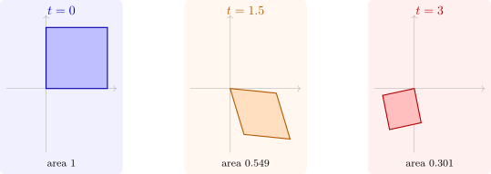

4.2 Liouville’s formula
Theorem 4.2.1 (Liouville). If \(\Phi \) is a matrix solution of \(\Phi ' = A(t)\Phi \), then \[ \det \Phi (t) = \det \Phi (t_0)\exp \int _{t_0}^t\tr A(s)\,ds . \] In particular \(\det \Phi (t)\) is either never zero or always zero.
Proof. The determinant is linear in each row, so its derivative is the sum of the determinants obtained by differentiating one row at a time: \((\det \Phi )' = \sum _i\det \Phi ^{(i)}\), where \(\Phi ^{(i)}\) is \(\Phi \) with row \(i\) replaced by its derivative. Row \(i\) of \(\Phi ' = A\Phi \) is \(\sum _ja_{ij}(\text {row } j \text { of } \Phi )\). Substituting, every term with \(j \neq i\) gives a determinant with two equal rows, which is zero, and the term \(j = i\) gives \(a_{ii}\det \Phi \). So \((\det \Phi )' = \bigl (\sum _ia_{ii}\bigr )\det \Phi = \tr A(t)\det \Phi \), a scalar linear equation, whose solution is the formula. □
The formula has a geometric meaning. The columns of \(\Phi (t)\) are the images under the flow of the edges of a parallelepiped, and \(\det \Phi (t)\) is its signed volume. Liouville’s formula says that volumes in the state space change at the rate \(\tr A\), the divergence of the vector field \(A(t)x\). If \(\tr A = 0\) the flow preserves volume, as the pendulum’s variational flow did in Software 3.6.2; if \(\tr A < 0\) it contracts volume (Figure 7). For a non-linear system \(x' = f(x)\), the same argument applied to the variational equation shows that the flow changes volumes at the rate \(\operatorname {div} f\), which is Liouville’s theorem of Hamiltonian mechanics when \(\operatorname {div} f = 0\).

Scalar equations of order \(n\)
The equation \(y^{(n)} + a_{n-1}(t)y^{(n-1)} + \dots + a_0(t)y = 0\) becomes a system by Theorem 1.1.3, with companion matrix whose trace is \(-a_{n-1}(t)\). For solutions \(y_1, \dots , y_n\) the fundamental matrix has rows \(y^{(k)}\), and its determinant is the Wronskian \[ W(t) = \det \begin {bmatrix} y_1 & \cdots & y_n\\ y_1' & \cdots & y_n'\\ \vdots & & \vdots \\ y_1^{(n-1)} & \cdots & y_n^{(n-1)}\end {bmatrix}, \qquad W(t) = W(t_0)\exp \Bigl (-\int _{t_0}^ta_{n-1}(s)\,ds\Bigr ) , \] the second formula being Abel’s identity. The solutions are independent if and only if \(W \neq 0\) at one point. For arbitrary functions this criterion fails: \(t^2\) and \(t|t|\) are independent on \((-1, 1)\), but their Wronskian vanishes identically; by Abel’s identity they cannot both solve a second-order equation \(y'' + py' + qy = 0\) with continuous coefficients on \((-1, 1)\).
Reduction of order
If one solution \(y_1\) of \(y'' + p(t)y' + q(t)y = 0\) is known, Abel’s identity gives a second. With \(W = y_1y_2' - y_2y_1' = Ce^{-\int p}\), \((y_2/y_1)' = W/y_1^2\), so \[ y_2 = y_1\int \frac {e^{-\int p(t)\,dt}}{y_1^2}\,dt . \]
Example 4.2.2. For \(y'' - 2y' + y = 0\) with \(y_1 = e^t\): \(p = -2\), \(e^{-\int p} = e^{2t}\), and \(y_2 = e^t\int e^{2t}e^{-2t}\,dt = te^t\). For the Euler equation \(t^2y'' - 2y = 0\) on \(t > 0\), written as \(y'' - (2/t^2)y = 0\), with \(y_1 = t^2\): \(p = 0\), and \(y_2 = t^2\int t^{-4}\,dt = -\frac 13t^{-1}\), so \(t^{-1}\) is a second solution.
Questions on this section
Stuck on something here? Ask below and it stays attached to this topic.